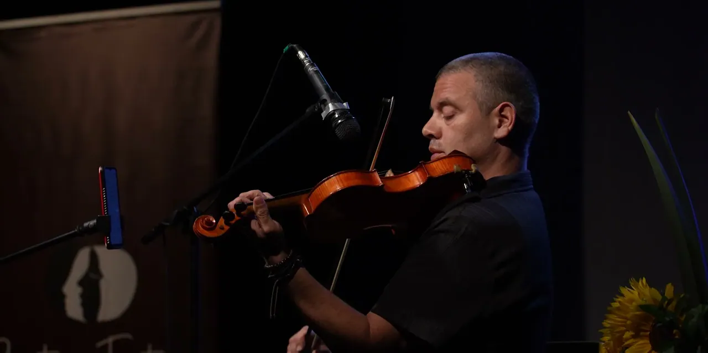
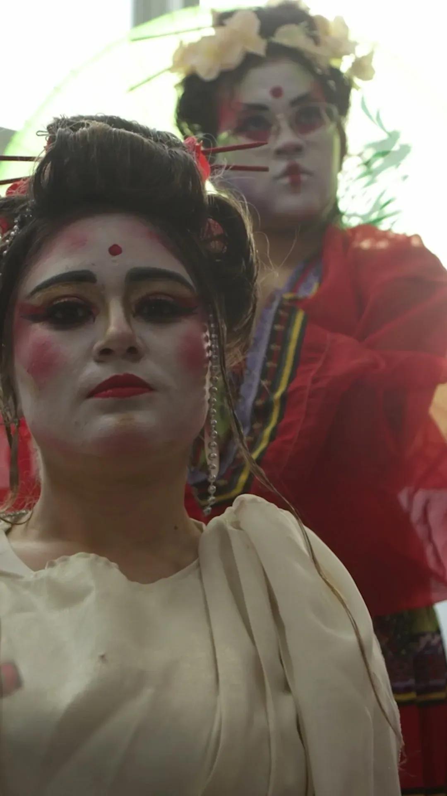
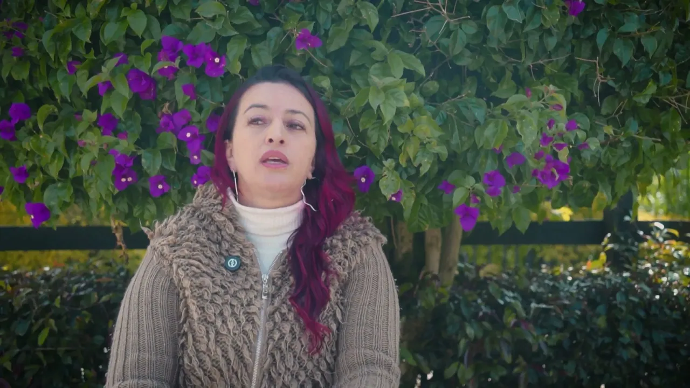

Servicios
Edición, documental, motion y diseño, en remoto desde Colombia (UTC-5). Ordenados por lo que más piden los clientes. Precios en USD, desde.
Edición de video largo
desde 150 USD por video
- desde 250 USD por documental · Documental (30-60 min)
- desde 1.300 USD al mes · Editor fijo del canal
WhatsApp Cotizar este servicio

Videos de 10 a 20 minutos para YouTube, charlas, pódcast y eventos.
- Para quién
- Canales de YouTube de cabeza parlante, educativos, de negocios, vlog o pódcast. También instituciones que graban charlas y eventos.
- Qué es
- Recibo tu material crudo y te devuelvo un video listo para subir: estructura, ritmo, gancho en los primeros segundos, material de apoyo, rótulos, subtítulos y sonido nivelado a −14 LUFS.
- Qué recibes
- MP4 en 1080p o 4K, con el sonido a −14 LUFS
- Subtítulos en SRT, en español, en inglés o en los dos
- El proyecto de Premiere, o XML y EDL para Resolve
- Una hoja con lo que se cortó y por qué, si la pides
- Incluye
- Corte y ritmo, limpieza de silencios y retomas, apoyo visual con tu material o archivo con licencia, rótulos, subtítulos, sonido nivelado y dos rondas de revisión.
- Prueba
- Casi 3 años en Viboral Televisión, un canal diario: cada semana editaba dos programas de unos 28 minutos y uno de una hora.
¿Sigues el estilo de mi canal?
Sí. Con 2 o 3 videos tuyos de referencia sigo tus rótulos, tu música y tu ritmo. Si no tienes estilo definido, te propongo uno en el primer corte.
¿Qué música usas?
La de tu biblioteca con licencia (Epidemic Sound, Artlist u otra) o música de dominio público. Nunca música sin licencia.
¿Y si mi video dura más de 20 minutos?
Un documental de 30 a 60 minutos parte de 250 USD. Para otras duraciones, cuéntame el material y te doy un precio fijo.
Shorts y reels
desde 25 USD por short
- desde 900 USD al mes · Paquete de 12-16 shorts
WhatsApp Cotizar este servicio

Verticales de 15 a 60 segundos, sueltos o en paquete mensual.
- Para quién
- Creadores que quieren sacar shorts de cada video largo, y marcas que publican reels todas las semanas.
- Qué es
- Verticales para YouTube Shorts, Reels y TikTok, desde tu video largo o desde tu material: gancho en el primer segundo, subtítulos palabra por palabra, textos fuera de la zona de botones y sonido nivelado.
- Qué recibes
- MP4 en 1080 × 1920
- Subtítulos quemados, con tu tipografía y tus colores
- Titular de gancho con alternativas para probar
- Versión 1:1 o 16:9 si la necesitas
- Incluye
- Selección de momentos, reencuadre vertical, subtítulos palabra por palabra, titular, sonido nivelado y dos rondas de revisión.
- Prueba
- En agosto de 2026 entregué 19 reels verticales con subtítulos y rótulos para el Instituto de Cultura de El Carmen de Viboral.
- Lo ves en
- Festivales del Instituto
- Aycito
- Tulipomanía: la primera burbuja · Proyecto de muestra
¿Sacas los shorts de mi video largo?
Sí. Es lo más eficiente: de un video de 10 a 20 minutos suelen salir varios momentos con gancho. Te los propongo antes de editarlos.
¿Publicas tú los shorts?
Te entrego los archivos listos y el texto del titular. La publicación queda en tu cuenta.
Documental y archivo
desde 250 USD por documental
- desde 150 USD por video · Video largo (10-20 min)
WhatsApp Cotizar este servicio

Historias con fotos, documentos, titulares y mapas, con licencias verificadas.
- Para quién
- Canales de historia, true crime y deportes, y instituciones que quieren contar su memoria.
- Qué es
- Documentales y segmentos de archivo: fotos con movimiento y profundidad, documentos con resaltado que se dibuja, titulares, mapas y una línea de tiempo. Cada fecha y cada cifra con su fuente.
- Qué recibes
- El documental en 16:9 y, si lo pides, la versión en otro idioma
- Un short vertical con el gancho
- Una ficha de fuentes y licencias, imagen por imagen
- Incluye
- Investigación de archivo con licencias, edición, mapas y gráficos, sonido nivelado y dos rondas de revisión.
- Prueba
- Edité el documental Video Memoria 2025 de la Fiesta del Libro y el del Foro de Filosofía STOA (12:50) para el Instituto de Cultura.
- Lo ves en
- Abejas: la extinción
- Guardianes del Agua
- Bonnie y Clyde: los últimos 127 días · Proyecto de muestra
¿Consigues el material de archivo?
Sí, de fuentes de dominio público o con licencia (FBI Vault, NOAA, Biblioteca del Congreso, Wikimedia Commons), y te entrego la ficha de cada imagen.
¿Qué pasa si un dato no se puede comprobar?
Se quita o se dice en pantalla. En Bonnie y Clyde el encargo hablaba de 102 días; las fechas daban 127, y así se llamó la pieza.
Motion graphics, datos y mapas
desde 120 USD por día
WhatsApp Cotizar este servicio

Gráficos de datos con profundidad, texto detrás del sujeto, mapas y rótulos, en After Effects.
- Para quién
- Canales de finanzas, negocios, historia, ciencia y viajes, documentales y marcas que necesitan explicar con gráficos.
- Qué es
- Gráficos que explican: cifras y gráficas que se dibujan con la voz, paneles y texto detrás de quien habla (recortado del fondo) o delante, mapas y rutas, contadores y líneas de tiempo, con diseño sonoro sincronizado. Se arman como plantillas de After Effects con tu marca: el siguiente episodio solo cambia los datos.
- Qué recibes
- Clips listos para tu línea de tiempo, con fondo o con transparencia
- El proyecto de After Effects con las plantillas de tu marca
- La versión vertical si la necesitas
- La fuente de cada dato y la atribución de cada mapa
- Incluye
- Diseño del estilo, animación, datos con fuente verificable y dos rondas de revisión.
- Prueba
- Hice la animación de cierre de los videos del XXV Carnavalito 2026 y animo gráficos a partir de lo que entrega el diseñador del Instituto de Cultura. En el laboratorio, «Tomas imposibles»: texto que pasa detrás del dron, en 3D.
- Lo ves en
- Festivales del Instituto
- Tomas imposibles · texto detrás del sujeto · Proyecto de muestra
- Expedición al Nevado del Ruiz · Proyecto de muestra
- La Adelita · motion musical · Proyecto de muestra
¿De dónde salen los mapas?
De fuentes libres con atribución: OpenStreetMap, Natural Earth y el modelo de relieve Copernicus GLO-30. Cada pieza lleva sus créditos.
¿Puedo cambiar los datos después?
Sí. Los mapas y gráficos se arman desde los datos: cambiar una ruta o una cifra no obliga a rehacer la animación a mano.

Tres variantes por video para prueba A/B, legibles en el celular.
- Para quién
- Canales de YouTube que quieren probar ideas distintas para el mismo video.
- Qué es
- Tres miniaturas por video, cada una con una idea distinta: una sola promesa, una cara o un sujeto grande, de dos a cuatro palabras, legibles a 168 × 94 px, el tamaño de la celda en el celular.
- Qué recibes
- Tres PNG o JPG en 1280 × 720
- Una vista de las tres al tamaño del celular
- El archivo editable
- Incluye
- Tres conceptos distintos, diseño, prueba de lectura a 168 × 94 px y una ronda de ajustes.
- Prueba
- Catorce miniaturas de muestra en sets A/B (documental, finanzas, aventura y una serie de cinco), todas legibles a 168 × 94 px.
- Lo ves en
- Miniaturas en sets A/B · Proyecto de muestra
¿Usas mi cara?
Sí, de tus fotos o de cuadros de tu video. La cara va grande y se lee al tamaño del celular.
¿Por qué tres variantes?
Para probarlas con la herramienta de prueba de YouTube o una tras otra: tres ideas distintas, no tres versiones de la misma.
Diseño e identidad
desde 450 USD por identidad con piezas
- desde 300 USD por landing bilingüe · Landing bilingüe
WhatsApp Cotizar este servicio

Logo, sistema gráfico y piezas listas para imprenta, en español y en inglés.
- Para quién
- Artistas, escuelas, academias, cafés y marcas pequeñas que necesitan verse profesionales en papel y en pantalla.
- Qué es
- Una identidad dibujada para tu caso, no una plantilla: logo en todas sus versiones, paleta con HEX, RGB y CMYK, tipografías libres, un patrón o una ilustración propia y las piezas que vas a imprimir, con sangrado, marcas de corte y fuentes embebidas.
- Qué recibes
- Logo en SVG, PNG y PDF: principal, horizontal, monograma y favicon, en positivo, negativo y a una tinta
- Piezas para imprenta en PDF CMYK con sangrado de 3 mm y marcas de corte
- Manual de marca corto en PDF
- Mockups para ver las piezas antes de imprimir
- Incluye
- Concepto, logo en todas sus versiones, paleta, tipografías, patrón o ilustración, hasta cinco piezas para imprenta y dos rondas de revisión.
- Prueba
- Identidad de muestra para una pintora: logo dibujado en vector, 12 PDF para imprenta en CMYK, manual de 10 páginas y mockups propios en Blender.
- Lo ves en
- Identidad para una pintora · Proyecto de muestra
¿Me entregas archivos editables?
Sí: SVG y PDF vectoriales, y el código que genera las piezas, para que cambiar una fecha o un precio no obligue a rediseñar.
¿De dónde salen las imágenes?
De tu material, de ilustración propia o de obras de dominio público o CC0 con su ficha. Nada generado ni de bancos sin licencia.
¿Trabajas con mi imprenta?
Sí. Los PDF salen con sangrado, marcas de corte y CMYK; si tu imprenta pide otro perfil o formato, lo ajusto.
Web
desde 300 USD por landing bilingüe
- desde 450 USD por identidad con piezas · Identidad con piezas de imprenta
WhatsApp Cotizar este servicio

Landings estáticas, rápidas y bilingües, con inscripción o reserva por WhatsApp.
- Para quién
- Academias, artistas, clubes y negocios locales que necesitan una página que cargue rápido en el celular y convierta visitas en mensajes.
- Qué es
- Una página estática en HTML, CSS y JavaScript, sin plantillas ni constructores: tu identidad, tus servicios y precios, y un formulario o un flujo de reserva que arma el mensaje por WhatsApp o por correo. En español y en inglés, accesible y medida con Lighthouse.
- Qué recibes
- Sitio estático listo para GitHub Pages, Netlify o Cloudflare Pages
- Versión en español y en inglés
- Formulario o reserva por WhatsApp o correo, sin servidor
- Informe de Lighthouse en celular
- Incluye
- Diseño, maquetación de 360 px a 4K, animaciones que respetan «reducir movimiento», SEO básico, formulario sin servidor y dos rondas de revisión.
- Prueba
- Dos landings de muestra, una pintora y una academia de pádel, con Lighthouse en celular de 100 en rendimiento y en accesibilidad.
- Lo ves en
- Dos landings de muestra · Proyecto de muestra
¿Tengo que pagar servidor?
No. Son páginas estáticas: se alojan gratis en GitHub Pages, Netlify o Cloudflare Pages. Solo pagas el dominio, si quieres uno.
¿Puedo cambiar precios y horarios?
Sí. Los textos y los precios están en un archivo de datos: cambias una línea y la página se vuelve a generar.
¿La reserva cobra en línea?
No: arma el mensaje por WhatsApp o por correo. Si necesitas cobrar, se agrega el enlace de pago de tu banco o plataforma.
Así trabajo con un canal
Para canales que publican cada semana: un editor fijo, un sistema que mejora con cada video y nada que tengas que perseguir.
- 48–72 h
Primer corte rápido
Desde que recibo el material. Corto sobre la transcripción y en los silencios medidos, sin comerme sílabas.
- Guía
Tu guía de estilo
Cada nota tuya entra a una guía del canal: tipografías, colores, ritmo, música. Un error no se repite.
- AE
Biblioteca de gráficos
Los gráficos se arman como plantillas de After Effects con tu marca: cada episodio se llena con tus datos y la biblioteca crece.
- Fuente
Cada cifra con su fuente
Todo número en pantalla se verifica contra una fuente pública, con su unidad y su periodo.
- QA
Controles antes de que lo veas
Sonido a −14 LUFS, texto revisado letra por letra, gráficos que nunca tapan la cara y exportación con el formato correcto.
- .prproj
El proyecto, incluido
Con cada video te llega el proyecto de Premiere y After Effects ordenado, con medios y fuentes.
- Cambios
Los cambios que necesites
Notas en código de tiempo. En el plan mensual entran todos los cambios, también los de último momento.
- UTC-5
Por escrito y a tiempo
Comunicación escrita en español o inglés. Respondo en menos de 12 horas.
Proceso
Cuatro pasos, con plazos por escrito desde el primer día.
- Día 0
Brief
Me cuentas qué necesitas, para cuándo y con qué material, y me lo compartes por Drive, Dropbox o WeTransfer. Te confirmo plazo y precio fijo por escrito.
- 48-72 h
Primer corte
Video de 10 a 20 minutos: 48 a 72 horas desde que tengo todo el material. Shorts: 24 a 48 horas.
- 2 × 24 h
Revisiones
Dos rondas incluidas. Me dejas notas con código de tiempo en Frame.io, en Drive o en un documento. Cada ronda, en 24 horas.
- Final
Entrega
MP4 final, subtítulos SRT y el proyecto de Premiere, o XML y EDL para Resolve.
Precios
Por pieza o por paquete, nunca por hora. El precio final depende del material, la duración y el plazo, y queda fijo antes de empezar.
- Video largo para YouTubeDe 10 a 20 minutos. Corte, ritmo, rótulos, subtítulos y sonido a −14 LUFS.desde 150 USD por videoDocumental de 30 a 60 minutos: desde 250 USD.
- Shorts, paquete mensualDe 12 a 16 shorts al mes. Gancho en el primer segundo, subtítulos palabra por palabra, zona segura.desde 900 USD al mesShort suelto: desde 25 USD.
- Editor fijo de tu canalUn editor con calendario fijo para tu canal. El volumen se acuerda en el brief.desde 1.300 USD al mes
- MiniaturasTres variantes por video para prueba A/B, revisadas al tamaño del celular.desde 40 USD el set de 3
- Motion y mapasMapas animados, rutas, perfiles de altitud, gráficos de datos y rótulos.desde 120 USD por día
- IdentidadLogo, paleta, tipografías y hasta cinco piezas listas para imprenta.desde 450 USD por identidad con piezasLanding bilingüe: desde 300 USD.
Preguntas frecuentes
¿Hablas inglés?
Español nativo, inglés escrito. Todo el trabajo va por escrito: el brief, las notas con código de tiempo y las revisiones. Subtitulo en inglés y en otros idiomas, sincronizado al corte.
¿En qué horario trabajas?
Estoy en Colombia, UTC-5 todo el año, sin cambio de hora: la misma hora de Nueva York en invierno y una hora menos en verano. Con España hay 6 o 7 horas de diferencia. Respondo en menos de 12 horas.
¿Cómo se paga?
En dólares, por la plataforma donde nos encontramos (YTJobs, Workana o Upwork) o por transferencia internacional. En proyectos sueltos, 50 % para empezar y 50 % contra la entrega. Los paquetes mensuales se pagan al inicio de cada mes.
¿Cuántas revisiones incluye?
Dos rondas por pieza. Si después cambia el guion o la estructura, lo cotizamos antes de tocar nada.
¿Cuánto tarda?
El primer corte de un video de 10 a 20 minutos, 48 a 72 horas desde que tengo todo el material. Shorts, 24 a 48 horas. Los plazos quedan por escrito en el brief.
¿Mi material está seguro?
Tu material y tus videos no se publican ni se muestran sin tu permiso por escrito. Si lo necesitas, firmo un acuerdo de confidencialidad. Los proyectos de muestra de esta web usan material mío o de dominio público.
¿Usas imágenes, voces o música sintéticas?
No. Trabajo con tu material, con mis tomas o con archivo de licencia verificada: dominio público, CC0 o CC BY con atribución. Cada caso de esta web dice de dónde sale cada imagen y cada sonido.
¿Por qué tan barato?
Porque vivo en Colombia y trabajo sin agencia en medio. El estándar es el mismo: sonido a −14 LUFS, subtítulos revisados palabra por palabra y proyecto editable. Prefiero clientes que se quedan a clientes de una sola vez.
¿Me entregas el proyecto editable?
Sí. Con el MP4 va el proyecto de Premiere, o XML y EDL para Resolve, para que tu equipo pueda retocarlo.
Arma tu pedido
Elige qué necesitas. Ves el rango en USD y el mensaje queda listo para enviarlo. No se envía nada hasta que tú lo mandes.